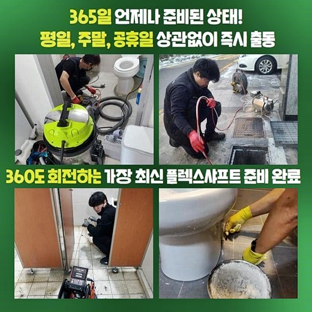
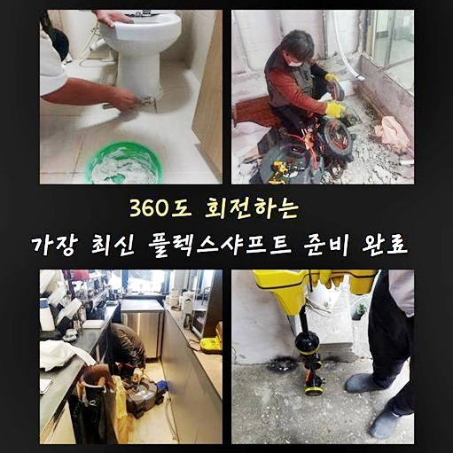
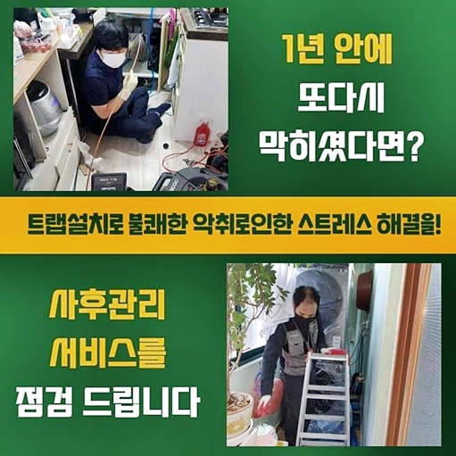
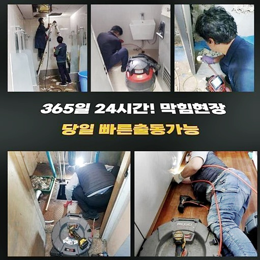
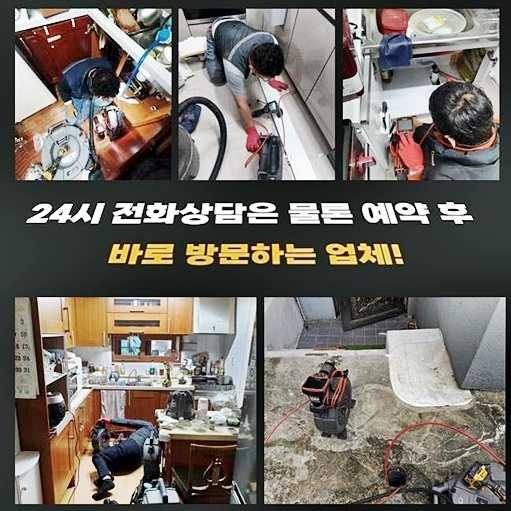
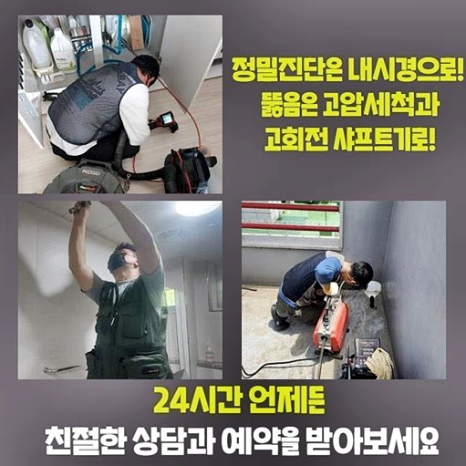

🏠 종로 송월동씽크대역류 내수동 하수구뚫는곳 설비공사
용인 싱크대막힘 전문 시공 후기

📋 작업 개요
- 위치: 용인
- 서비스 유형: 싱크대막힘, 하수구막힘, 배관막힘, 역류해결, 뚫는업체, 배관청소, 고압세척, 설비공사
- 작업 일시: 2024. 8. 10. 1:14
- 업체명: 하수구수사대 (010-5615-2118)
🔍 문제 상황
종로 송월동씽크대역류 내수동 하수구뚫는곳 설비공사
지하실 등에 천장부분에 자리하고 있는 하수도를 종종 보신 적이 있을거에요
관심이 없다면 지나치시는 경우들이 대부분입니다
이런 배관들은 공동배수관으로 불리우고 있어요
이 라인이 막힐 시 전체적으로 좋지 못한 영향들을 끼치죠
금일엔 주차공간의 메인관로가 막혀버리면서 역류증상으로도 불거져 전화주셨습니다
메인라인들이 막히면 전반적인 하수라인에 불상사를 일으키게 하고 더불어 역류되는 증세들이 나타납니다
1층라인에서 하수가 안나가는 현상을 띄고 있었어요
이러한 증세를 풀어내도록 진단부터 수행해보았어요
내시경기기로 내측 상황들을 관찰해주는데요
외부에서 관찰할 수 있는 내용엔 한계들이 존재해 내시경기기를 깊은 부분까지 삽입해주고 면밀히 살펴보았습니다
내시경기기로 관찰한 결과 머리카락뭉치와 기름으로 뭉쳐진 슬러지처럼 오염원이 통로를 가득 메웠어요
우선 통수양상을 복구시키고자 샤프트장비를 가용시켰어요
샤프트도구를 사용하여 쌓인 잔해를 청소시켜요

🔎 원인 분석
💡 전문가 진단: 정밀 진단 장비를 사용하여 슬러지의 고착 여부를 판명하고 타격/세척 작업을 실시했습니다.
이후엔 공동으로 이용하는 배수관을 확인하는 것이 중요합니다
천장쪽에 하수관의 작업들을 수행해보았어요
아래쪽에 위치한 가구에서 다중화로 증상이 발현된것으로 평시에 이런 문제들이 생겼을 시 집수시설이나 메인관일 확률이 커요
메인배수관은 천장부분에 있는 까닭에 사다리등을 운용하여 시공하는 것이 중요합니다
공용배수관의 증세를 파악하기 위해선 약간의 타공들이 행해져야하는데요
의뢰자에게도 면밀히 말씀을 한 후 동의해주신 덕에 약간의 홀을 내주었죠
구멍들을 뚫은 뒤 역시나 내시경장치를 삽입하여 화면을 통해 보여지는 내측을 체크해보았죠
내시경장치는 바깥에서 파악하기 쉽지 않은 하수라인을 세심하게 보는게 가능하므로 진단에서는 필수적으로 운용되고 있습니다
내시경장치로 배수로를 살폈더니 중간중간 단단해진 이하수가 자리하고 있어 증상이 심화된 형상이였습니다
단단해진 오염원들이 전체적으로 퇴적된 바람에 배출되지 못하게 막힘가속화를 불러일으켰습니다
잔해물이 많기도하였고 연결된 하수관 내측에 자리잡고 있었기에 고압수청소로 시공이 시행되어야 할 양상으로 보여졌어요
슬러지들이 태산같아 아쉽게도 아래층들은 오수들이 빠져나가지 못하며 파생되는 발생된것이죠
증상이슈는 약간씩 배수될 때 문제들이 나타날 수 있겠으나 갑작스레 발생하게 되는 경우들도 있죠
1차적으로 상황이 심각하다면 전문가들과 협업하는것이 좋고 베스트는 때때로 점검해서 앞으로 있을 증상들이 발생하지 못하게 조치하는겁니다
증세를 풀어내도록서 공동관에 수리를 진행할 생각이였어요

🔧 작업 과정
고압노즐방식을 실시할것을 안내하고 수리를 진행시켰는데요
생각외로 상당량의 이물이 배관을 채운탓에 꼼꼼하게 수리를 진행해야 했었습니다
결집역할을 하는 공용관들을 통해서 연결된 라인에서 사용한 뒤 흐르는 오수들이 통과하기에 문제들이 발생될 가능성이 커집니다
갑작스레 증상들이 발생하는 것을 막으려면 메인배수관도 주기적으로 점검해보는게 좋겠습니다
타공부분에 라인을 사용하여서 이물들을 빠르게 제거해주는데요
고압수세척 방법은 쎈 청수를 분사해 깊은 지점의 잔해를 청소하는 방식인데요
기름으로 문제되는 배수관의 막힘들을 바로 잡는데에 도움이 되죠
벽부분에 붙어있는 잔해물질을 제거시키기에 이전 모습과 같이 복구시킵니다
배수관에 많았던 슬러지들이 벽부분에서 탈락되어 오수와 배출됩니다
오염원의 경우 비닐쪽을 빠져나와 모입니다
위생과 안전을 위하여 비닐들을 써서 보양들을 이행하게 되는것입니다
보양들을 안했을 시 향후 오염원들이 여기저기 튀게되어 지저분한 환경을 만들었을거에요
그리고 기름때문에 생기게 된 슬러지들이 많았습니다
슬러지의 경우 청소하는게 쉽지 않아 안전히 대처하셔야 하겠습니다
배관의 안에 기름 잔해가 상당수 쌓이면 하수구 막힘 증세들이 생기면서 위생관련 사안에서도 좋지못하고 냄새까지 나죠
오염물이 여러방향으로 튄다면 수습하는것 또한 쉽지 않습니다
고압수청소를 수행하니 배출되는 물의 양이 증가했어요
오수들이 잘 빠지는건 얘기는 메인관의 잔해물이 제거되고 있는 의미입니다
꾸준한 고압수청소를 통해서 원인들을 신속하게 청소했습니다
청소 시점에도 내시경 카메라를 이용해 깊은 지점의 잔해가 제거되었나 확인합니다
내시경장치를 통해 관찰하니 사이즈가 있는 이물은 없어졌으며 벽에 흡착된 슬러지들이 보여졌어요
이 부분도 배출시켜야 청소과정이 이루어졌다고 생각할 수 있답니다
원인들을 완전하게 제거한 뒤 곧이어 샤프트를 동원하여 벽부분에서 배출되지않았던 이물들을 타겟으로 해 빈틈없이 제거했습니다


✅ 작업 완료
막힘이 생긴 이유를 제거한 뒤 내시경기기로 검수를 실시했습니다
고객분과 공용배수관의도 확인해주었어요
배수관에는 미량의 잔해물도 없는채로 깔끔히 환골탈태한 안의 상태들을 확인해보았답니다
이제 아래층쪽에서 배수될때 문제없이 아래로 배출됩니다
배수관에 이중화된 증세들이 야기된다면 우선 메인 배관과 집수설비의 컨디션을 체크해봐야해요
주기적으로 점검을 실시해 문제들이 생겨나는 일 없게 저희업체와 안전한 방법으로 관로들을 관리하시길 권해드립니다




⚠️ 주방 싱크대 배관 막힘 예방 수칙
- ✅ 기름기가 묻은 식기나 프라이팬은 설거지 전 키친타올로 반드시 기름때를 닦아내세요.
- ✅ 주기적으로 싱크대 개수대에 뜨거운 물을 가득 받아 한 번에 내려 배관 내부 기름을 씻어내세요.
- ✅ 배수구 거름망을 미세한 필터로 사용하시고 음식물 찌꺼기가 틈으로 새어 들지 않게 관리하세요.
- ✅ 베이킹소다와 식초를 뜨거운 물과 함께 일주일에 한 번씩 부어주면 배관 살균과 막힘 예방에 좋습니다.
💡 핵심 정리
- 확실한 장비 작업(내시경 점검 및 샤프트 스케일링)으로 원인을 뿌리 뽑습니다.
- 작업 후 1년 이내에 동일한 부위 재발 시 100% 무상 A/S 서비스를 보장합니다.
- 서울 · 경기 · 인천 전 지역에 24시간 언제든 긴급 출동할 수 있도록 항시 대기 중입니다.
❓ 자주 묻는 질문 (FAQ)
🚨 용인 싱크대막힘 문제로 고민이신가요?
정확한 원인 진단과 확실한 시공으로 재발 없는 해결을 약속드립니다.
24시간 긴급 출동 | 서울 · 경기 · 인천 전지역 | 1년 내 재발 시 무상 A/S